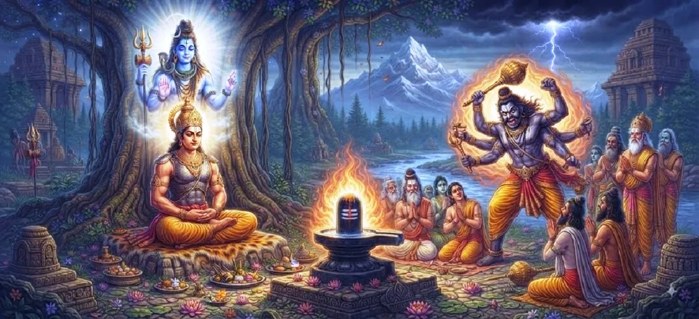

भीम और भीमाशंकर की कहानी
कोटिरुद्र संहिता का इक्कीसवाँ अध्याय भीमाशंकर ज्योतिर्लिंग की सम्मोहक गाथा का परिचय देता है, जो धर्म की रक्षा की तत्काल आवश्यकता से उत्पन्न एक दिव्य अभिव्यक्ति है।
यह अत्याचारी भीम के उत्थान का वर्णन करता है, जिसके अनियंत्रित अहंकार ने ब्रह्मांडीय व्यवस्था को खतरे में डाल दिया था, जिससे दैवीय हस्तक्षेप करने के लिए मजबूर हो गए।
यह अध्याय उत्कृष्टतापूर्वक न्याय की विजय के लिए मंच तैयार करता है, यह दर्शाता है कि शिव की कृपा अंधेरे के खिलाफ अंतिम आश्रय है।
अध्याय 21 की मुख्य बातें
अत्याचार का उदय
राक्षस भीम शक्ति प्राप्त कर लेता है और धर्मियों पर अत्याचार करना शुरू कर देता है।
लौकिक कॉल
भक्तों की पीड़ा दिव्य कार्रवाई की मांग करते हुए स्वर्ग तक पहुंचती है।
दैवीय हस्तक्षेप
धर्म के संतुलन को बहाल करने के लिए भगवान शिव भीमाशंकर के रूप में प्रकट हुए।
धर्म की रक्षा
भीमाशंकर अहंकार की ताकतों के खिलाफ एक कवच के रूप में खड़े हैं।
पवित्र अभिव्यक्ति
ज्योतिर्लिंग की स्थापना कृपा की स्थायी उपस्थिति का प्रतीक है।
न्याय की विजय
अध्याय राक्षस के अहंकार के अपरिहार्य पतन की तैयारी करता है।
इस अध्याय में मुख्य विषय
भीम का अत्याचारी शासन
अध्याय में राक्षस भीम का परिचय दिया गया है, जिसकी अनियंत्रित महत्वाकांक्षा और पवित्र परंपराओं के प्रति उपेक्षा के कारण गहरे अंधकार का दौर आया।
उसका अत्याचार धर्म की नींव को चुनौती देते हुए, सभी क्षेत्रों में फैल गया।
धर्मी लोगों का उत्पीड़न
भीम के शासन में धर्मात्माओं, संतों और भक्तों को कष्ट सहना पड़ा और वे स्वतंत्र रूप से अपने धर्म का पालन करने में असमर्थ हो गए।
दुनिया ने उसके लगातार उत्पीड़न से मुक्ति की गुहार लगाई।
दैवीय संकट की प्रतिध्वनि
निर्दोषों की सामूहिक पीड़ा ने एक आध्यात्मिक प्रतिध्वनि पैदा की जिसे ईश्वर द्वारा अनदेखा नहीं किया जा सका।
स्वर्ग संकटग्रस्त लोगों की गंभीर प्रार्थनाओं का उत्तर देने के लिए तैयार है।
भीमाशंकर की अभिव्यक्ति
इस वैश्विक संकट के जवाब में, भगवान शिव बुरी ताकतों के खिलाफ खड़े होने के लिए भीमाशंकर के रूप में प्रकट हुए।
इस दिव्य उपस्थिति ने उन सभी के लिए आशा और नई ताकत ला दी जो उत्पीड़ित थे।
धर्म को पुनर्स्थापित करने का मिशन
भीमाशंकर के उद्भव का मुख्य उद्देश्य धर्म की बहाली और ब्रह्मांडीय व्यवस्था की सुरक्षा था।
उनकी उपस्थिति ही दुनिया में एक सुधारात्मक शक्ति के रूप में काम करती थी।
अंधकार के विरुद्ध प्रकाश की एक किरण
भीमाशंकर अहंकार और अत्याचार की छाया को चीरते हुए, प्रकाश की एक शाश्वत किरण के रूप में खड़े हैं।
यह एक निरंतर अनुस्मारक के रूप में कार्य करता है कि सत्य की हमेशा जीत होगी।
न्याय के प्रतीक के रूप में ज्योतिर्लिंग
ज्योतिर्लिंग स्वयं दैवीय न्याय और हस्तक्षेप के गहन प्रतीक के रूप में पहचाना जाता है।
यह इस अवधारणा का समर्थन करता है कि शक्ति को हमेशा धर्म से संयमित किया जाना चाहिए।
अंतिम संघर्ष की तैयारी
यह कथा शिव के दिव्य प्रकाश और राक्षस भीम के अंधेरे अहंकार के बीच अपरिहार्य टकराव के लिए मंच तैयार करती है।
पाठक इस आध्यात्मिक संघर्ष के चरमोत्कर्ष के लिए तैयार हैं।
अनुग्रह की स्थायी प्रकृति
कहानी इस बात को पुष्ट करती है कि भगवान की कृपा हमेशा मौजूद रहती है, जब भी दुनिया का संतुलन खतरे में पड़ता है, प्रकट होने के लिए तैयार रहती है।
उनकी सुरक्षा सभी प्राणियों के लिए परम सुरक्षा है।
अध्याय 22 की ओर
मंच तैयार होने के साथ, कथा इस गाथा के अंतिम, महत्वपूर्ण अध्याय की ओर ले जाती है।
पाठकों को अध्याय 22, राक्षस भीम का विनाश, के संकल्प को देखने के लिए आमंत्रित किया जाता है।
अध्याय 21 की मुख्य शिक्षाएँ
दिव्य प्रतिक्रिया
ईश्वर कभी भी धर्मी लोगों की पीड़ा के प्रति उदासीन नहीं रहता।
धर्म की रक्षा
धर्म की रक्षा करना देवता और भक्त का सर्वोच्च कर्तव्य है।
प्रकाश की विजय
दिव्य प्रकाश से अंधकार और अहंकार पर अनिवार्य रूप से विजय प्राप्त होगी।
न्याय कायम है
जब अत्याचार अनियंत्रित हो जाता है तो ईश्वरीय हस्तक्षेप न्याय बहाल करता है।
संकट में आशा
सबसे अंधकारमय समय में भी, शिव की उपस्थिति आशा और मुक्ति प्रदान करती है।
अहंकार पर विजय पाना
अहंकार बुराई की जड़ है; विनम्रता दिव्य मिलन की ओर ले जाती है।
आध्यात्मिक चिंतन
भीमाशंकर की कहानी एक गहन अनुस्मारक है कि हम अन्याय और अहंकार के खिलाफ अपने संघर्ष में कभी अकेले नहीं हैं। जब हम धर्म का समर्थन करते हैं, तो हम खुद को दैवीय इच्छा के साथ जोड़ते हैं, और जब धर्म गंभीर रूप से खतरे में होती है, तो प्राकृतिक व्यवस्था को बहाल करने के लिए भगवान प्रकट होते हैं। आइए हम विनम्रता विकसित करें, क्योंकि यह उस अहंकार के विपरीत है जिसने राक्षस भीम को बढ़ावा दिया, और याद रखें कि शिव में हमारा विश्वास एक ढाल है जो जीवन के सभी संघर्षों से हमारी रक्षा करता है।
अध्याय 21 का संदेश जीना
पहचानें कि सच्ची ताकत धर्म के साथ जुड़ने से आती है, शक्ति या अधिकार के संचय से नहीं।
अपनी दैनिक बातचीत में विनम्रता का अभ्यास करें, उस अहंकार से बचें जो आध्यात्मिक पतन का कारण बन सकता है।
चुनौती और संकट के समय ईश्वर के सदैव मौजूद मार्गदर्शन और सुरक्षा पर भरोसा रखें।
प्रमुख आध्यात्मिक अवधारणाएँ
अहंकार को नष्ट करने और धर्म को पुनर्स्थापित करने के लिए शिव की दिव्य अभिव्यक्ति।
अनियंत्रित अहंकार, अत्याचार और पवित्र कानून की अवहेलना का प्रतीक है।
वह धार्मिक व्यवस्था जो संसार का पालन-पोषण करती है, जिसकी शिव रक्षा करते हैं।
जब धर्म ख़तरे में हो तो ईश्वर की प्रत्यक्ष कार्रवाई।
विनाश की ओर ले जाने वाले अहंकार का प्रतिकार करने के लिए आवश्यक सद्गुण।
अहंकार और दैवीय सत्य के बीच आंतरिक और बाहरी लड़ाई।
अध्याय सारांश
कोटिरुद्र संहिता अध्याय 21 में राक्षस भीम के उदय और उसके परिणामस्वरूप भीमशंकर के दिव्य प्रकटीकरण का विवरण दिया गया है। यह अध्याय अत्याचार पर दैवीय कृपा की विजय पर प्रकाश डालता है और धर्म के लिए अंतिम युद्ध के परिचय के रूप में कार्य करता है। यह शिव की सुरक्षात्मक प्रकृति और धर्म की आवश्यकता को रेखांकित करता है, जो पाठकों को अध्याय 22 में अंतिम युद्ध की ओर ले जाता है।
अक्सर पूछे जाने वाले प्रश्न
1. कोटिरुद्र संहिता अध्याय 21 का प्राथमिक विषय क्या है?
अध्याय 21 में भीमाशंकर ज्योतिर्लिंग के उद्भव का वर्णन है, जो एक दिव्य अभिव्यक्ति है जिसका उद्देश्य दुनिया की रक्षा करना और राक्षस भीम के दमनकारी शासन के खिलाफ धर्म को कायम रखना है।
2. भगवान शिव भीमाशंकर के रूप में क्यों प्रकट हुए?
भगवान शिव ब्रह्मांडीय संतुलन को बहाल करने और पुण्यात्माओं की रक्षा करने के लिए प्रकट हुए, जिन्हें राक्षस भीम और उसकी सेना द्वारा सताया जा रहा था।
3. राक्षस भीम कौन था?
भीम एक अत्याचारी राक्षस था जिसके अहंकार और धर्म के प्रति उपेक्षा के कारण उसने धर्मियों और देवताओं को समान रूप से बहुत पीड़ा पहुँचाई।
4. भीमाशंकर ज्योतिर्लिंग का क्या महत्व है?
यह अपने भक्तों की रक्षा करने और बुराई को नष्ट करने के लिए भगवान शिव के हस्तक्षेप का एक शाश्वत प्रतीक है, जो शक्ति और दिव्य न्याय के प्रतीक के रूप में कार्य करता है।
5. यह अध्याय कथा प्रवाह को कैसे पाटता है?
यह अध्याय 20 (पवित्र रामेश्वर) का अनुसरण करता है और उस संघर्ष का परिचय देता है जो अध्याय 22 (राक्षस भीम का विनाश) के लिए मंच तैयार करता है।
6. इस कहानी से क्या आध्यात्मिक शिक्षा मिलती है?
कहानी इस बात पर जोर देती है कि बुराई चाहे कितनी भी शक्तिशाली क्यों न हो, जब धर्म दांव पर हो तो वह भगवान शिव की दिव्य शक्ति का सामना नहीं कर सकती।
"जब अत्याचार से धर्म के प्रकाश को खतरा होता है, तो ईश्वर संतुलन बहाल करने के लिए प्रकट होते हैं, और सभी को याद दिलाते हैं कि अहंकार को शिव के सत्य के सामने झुकना होगा।"
कोटिरुद्र संहिता के माध्यम से जारी रखें
अध्याय 21 भीम और भीमाशंकर की कहानी की पड़ताल करता है। अध्याय 22, राक्षस भीम का विनाश जारी रखें।